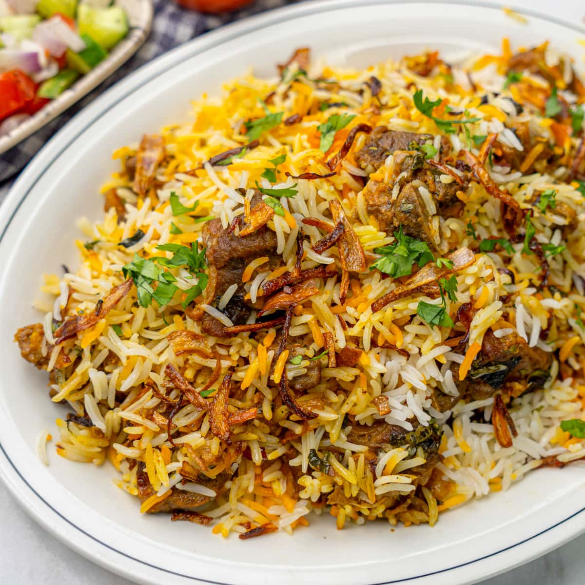

Hyderabadi Goat Biryani
Home

Description
Hyderabadi goat biryani is a famous Indian dish known for its rich aroma, bold spices, and layered cooking style.
Originating from the city of Hyderabad, it combines tender goat meat with fragrant basmati rice, saffron, fried
onions, yogurt, and a blend of spices such as cardamom, cloves, cinnamon, and chili. The dish is traditionally
prepared using the “dum” method, where the pot is sealed and slow-cooked so the flavors and steam remain trapped
inside, allowing the meat and rice to absorb deep flavor and aroma.
Hyderabadi goat biryani is celebrated for its balance of heat, richness, and texture. Each spoonful contains
fluffy rice coated in spices alongside juicy pieces of goat meat that have been marinated for hours to enhance
tenderness and taste. Often served with cooling raita, salan curry, or boiled eggs, the dish is a centerpiece at
festivals, weddings, and family gatherings. Its vibrant appearance, layered flavors, and aromatic spices make it
one of the most iconic dishes in South Asian cuisine.
Ingrediants
- Basmati Rice
- Salt
- Mutton / Lamb
- Turmeric Powder
- Special Garam Masala Powder
- Oil & Ghee
- Onion
- Ginger Garlic Paste
- Curd
- Cashews
- Raisin
- Coriander Leaves
- Mint Leaves
- Saffron
Steps
- Heat oil in a kadai and fry sliced onions until golden brown. Drain and reserve both the fried onions and the onion oil.
- Rinse and soak basmati rice for 1 hour.
- Chop coriander and mint leaves.
- Fry cashews and raisins in ghee and set aside.
- Soak saffron and food color in warm milk.
- Prepare the shahi garam masala powder by dry roasting the spices and grinding them into a fine powder.
- In a large bowl, add mutton along with raw papaya paste, shahi garam masala, ginger garlic paste, chili powder, turmeric, lemon juice, fried onions, yogurt, coriander leaves, mint leaves, green chilies, fried onion oil, and salt.
- Massage the marinade into the mutton for 2–3 minutes.
- Marinate the mutton for at least 1 hour (overnight preferred).
- Bring a large pot of salted water to a boil.
- Add soaked basmati rice and cook for 3–4 minutes until about 50% cooked.
- Do not fully drain the rice; use a slotted spoon while assembling.
- In a heavy-bottomed biryani pot or Dutch oven, spread the marinated mutton evenly at the bottom.
- Add half of the partially cooked rice over the mutton.
- Top with half of the fried onions.
- Add half of the coriander and mint leaves.
- Add the remaining rice on top.
- Add the remaining fried onions, coriander, and mint leaves.
- Sprinkle fried cashews and raisins over the rice.
- Drizzle rose essence and kewra water/extract.
- Pour the saffron milk mixture over the top.
- Knead wheat flour with water to make a sticky atta dough.
- Seal the rim of the pot with the dough.
- Cover tightly with a lid and place a heavy object on top.
- Cook on very low heat (“dum”) for about 45 minutes.
- Remove from heat and let it rest for 10 minutes.
- Open the lid, fluff the rice gently, and serve hot.